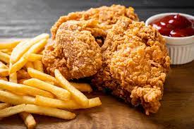

Triple-Dipped Fried Chicken

Delight to every age, as tasty and juicy as it gets.
This fried chicken batter yields the crispiest, spiciest, homemade fried chicken I have ever tasted!
It is equally good served hot or cold and has been a picnic favorite in my family for years.
Ingredients
- 1 quart vegetable oil for frying
- 4 ⅓ cups all-purpose flour, divided
- 1 ½ tablespoons garlic salt
- 1 tablespoon ground black pepper
- 1 tablespoon paprika
- half teaspoon poultry seasoning
- 1 ½ cups beer, or as needed
- 2 egg yolks, beaten
- 1 teaspoon salt
- ¼ teaspoon ground black pepper
- 1 (3 pound) whole chicken, cut into pieces
Directions
- Heat oil in a deep-fryer to 350 degrees F (175 degrees C).
- Mix together 3 cups flour, garlic salt,1 tablespoon pepper, paprika,
and poultry seasoning in a medium bowl.
- Stir together 1 1/2 cups beer, remaining 1 1/3 cups flour, egg yolks, salt, and 1/4 teaspoon pepper in a separate bowl; thin mixture with more beer if batter is too thick.
- Moisten chicken pieces with a bit of water, then dip in the dry mixture. Shake off excess and dip in the wet mixture, then dip in the dry mixture once more.
- Fry chicken pieces in hot oil until well-browned and internal temperature reaches 165 degrees F (74 degrees C), 15 to 18 minutes.
- Remove chicken pieces and drain on paper towels before serving.
Jump to Home